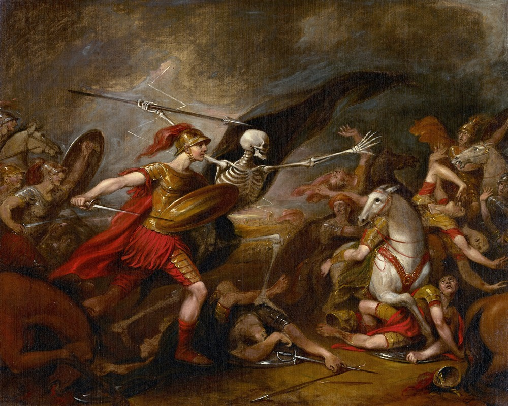

The Spice of Life
 Joshua at the Battle of Ai - Attended by Death by John Trumbull
The spice of life is battle — Robert Louis Stevenson, Talk and Talkers
This quote was originally used in the context of conversation, and yet it is my solemn belief that it can applied much more broadly. Before I dig any deeper, let me break my initial overarching thoughts into something like a hypothesis, thesis and antithesis:
- The spice of life is battle
- As such, life would be flavourless without conflict
- However, if the spice of life is battle, then the substance of life is mundanity.
Firstly, in terms of conversation, Stevenson makes an eloquently compelling case in the essay from which this quote was extracted from. Briefly I will add my own thoughts here.
Everyone has experienced the satisfaction of verbally sparring, whether by means of intellectual debate, casual banter or just plain argument. A fight to the death, using words as weapons. Being wrong is an intellectual indignity, and though we may think we are defending some noble cause or view, in the end we are really just fighting for ourselves. As such, our pride gives no opportunity for surrender; to concede any argument requires either an admirably humble loser or a detestable (but sometimes necessary) conversational pacifist.
However, battle is not just the spice of conversation, but also of life in general. In centuries past we would have to fight for our own physical survival, but in a world where survival is taken for granted, what then?
Instead, these days we are fighting for our social survival, our economic survival and our psychological survival. If life is just a game, then it's worth noting that there are a fair few competitors. Of course, this underlying sense of competition can undeniably be taken too far.
In one direction, too much focus on this competition can obviously become toxic, destroying not only yourself, but also your relationships with everyone around you. In the other direction, is a life without any conflict even worth living? No problems, no difficulties, no obstacles... Conflict adds flavour to what would otherwise be an entirely boring life, and in this way, battle encapsulate the spice of life, not its entire mode.
My world's on fire... how 'bout yours?
That's the way I like it and I'll never get bored — Smash Mouth, All Star
Historically, humanity has always enjoyed a good fight. From the macro perspective, war has ultimately been an effective means of settling a dispute, whether political, ideological, economic or otherwise.1Unfortunatly, sometimes a dispute is simply invented to justify conquest, genocide or other horrific acts that would otherwise be inexcusable However, while the historical precedence, social influence and scientific innovations born of war cannot be denied, most people these days have come to detest war in all forms.
Interestingly, the other primary macro perspective in this context is in terms of business: I'm thinking of corporate rivalries, price competition, advertising battles... Even the word 'campaign' I have only ever seen in three contexts: a marketing campaign, a political campaign or a war campaign.2Politics and the competition associated it works in much the same way as business; there's a reason the two major political parties are consider 'the hidden duopoly' It seems the spice of business is also battle; a true monopoly would make marketing, sales and the entire mechanics of business itself virtually redundant.
Likewise, from the micro perspective, battle between individuals has also been used to settle disputes. Throughout history, these battles came in many forms, including single combat, duels and gun fights. Of course these days, such acts would be labelled assault, grievous bodily harm and murder, respectively. The reason individuals felt, and still feel the need to settle their disputes in such ways was because of their pride, or, in more righteous terms, their honour.
Although violence can seem fairly implicit within the idea of battle, resorting to it as a means by which to settle any dispute, whether on the national or individual level, is now condemned to the extreme. For some, violence seems to be an unfortunate symptom of a desire for conflict. For others, violence is simply a tool by which to settle disputes and restore pride. Both of these reasons are indefensible.
While historically there have always been fights for honour, there have also always been fights for entertainment. Interestingly, this is one facet of life where violence has actually been condoned and even encouraged. Gladiators have given way to boxers, wrestlers and a staggering variety of martials artists. Swords have given way to fists, knees and bodies. The Colosseum has given way to The Octagon. And on and on it goes.
In fact, sport in its entirety and variety is essentially just fighting for entertainment. One individual or team versus another.3This is reminiscent of games in general, including board games, card games and even video games. In all these cases, conflict is the mode of entertainment; the spice of life Taking part is an obvious way in which we participate in this battle, but for most sports at the highest level, the spectators far outnumber the actual participants. It raises the obvious question: Why do we enjoy watching sport in the first place?
On one level, spectators are entertained by the surprise of not knowing what happens next.
On a much deeper level, supporters are less watching the fight than they are identifying with the fight - the greater the level of their support, the greater they identify with the battle.
Much of the time they are not supporting the team so much as what that team represents, whether their city, their state or even their country.
They see it as an extension of themselves, and justifiably so; for any geographical region is nothing but the sum of its individuals.
But more than this.
As spectators support their region and identify with the battle, it is almost as if they themselves are fighting it.
of not knowing what happens next.
On a much deeper level, supporters are less watching the fight than they are identifying with the fight - the greater the level of their support, the greater they identify with the battle.
Much of the time they are not supporting the team so much as what that team represents, whether their city, their state or even their country.
They see it as an extension of themselves, and justifiably so; for any geographical region is nothing but the sum of its individuals.
But more than this.
As spectators support their region and identify with the battle, it is almost as if they themselves are fighting it.
Inextricably connected to sport and even battle itself is the idea of winning and losing... What of that, you may ask? Well, in the grand scheme of things, I would argue it to be irrelevant: the spice of life is the battle itself, not the outcome of that battle (i.e. winning or losing). Similarly, as we experience the conflict and struggle of life itself, our focus in not the outcome either (i.e. dying).4Unless we are contemplating suicide. This is usually evidence of being unable to cope with the conflict of life, and that it is simply too much to handle
Whether playing sport or living life, we are all just playing the game for the game's sake.
In the end it's not about the destination, it's about the journey. And in that journey called life, it's spice... is battle.
← Simple = Accessible The Paradox of Contradiction →